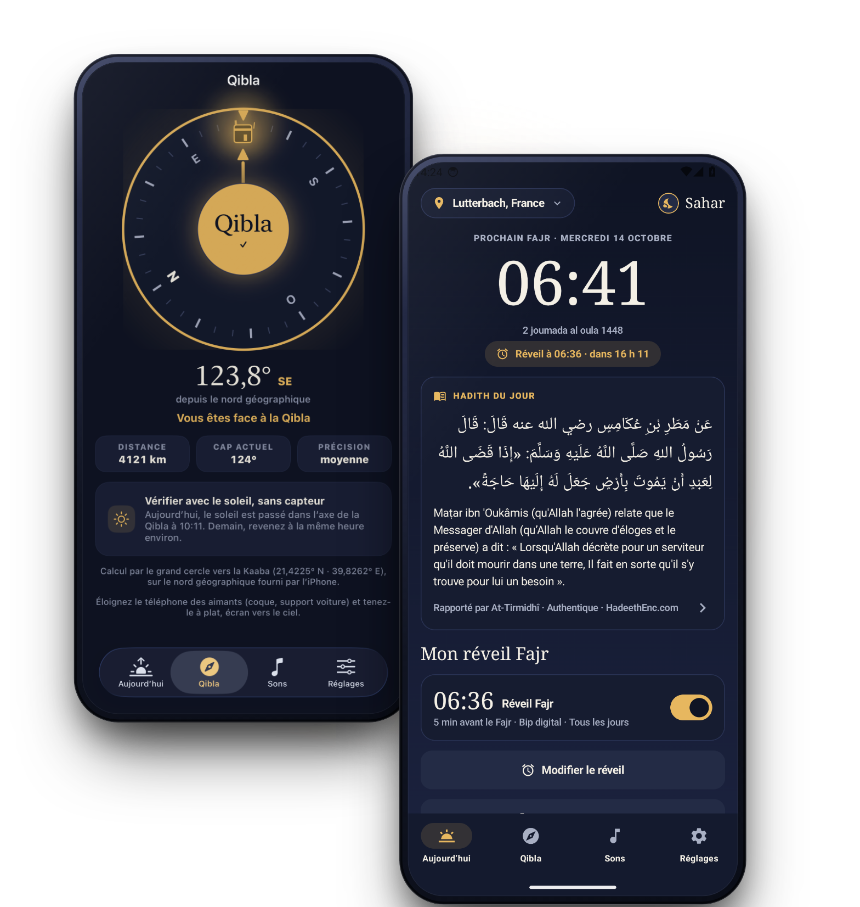
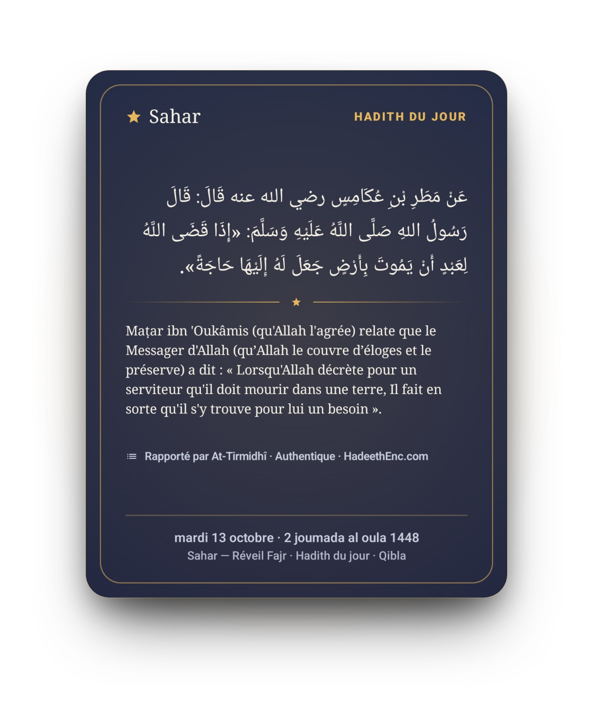

Un vrai réveil
Une alarme de l’iPhone, calculée chaque jour : elle sonne même en mode silencieux et en mode Concentration. Rappel de 5 minutes, et un bouton Arrêter sur l’écran verrouillé.
Sahar · Réveil Fajr سَحَر
Sahar calcule chaque jour l’heure du Fajr pour l’endroit où vous êtes et vous réveille comme une vraie alarme de l’iPhone, même en mode silencieux. Horaires et adhan, hadith du jour, Qibla et mode Ramadan : l’essentiel pour commencer la journée par la prière.
Gratuit · Sans publicité · Sans compte · Aucune donnée collectée · 12 langues

La nuit, vue par Sahar
Le moment du sahûr et de la prière de la nuit, celui où l’on se lève pour le Fajr. Sahar suit la nuit chaque jour selon votre position et sonne au moment que vous avez choisi : avant le Fajr, à l’heure du Fajr ou un peu après, jamais trop tard pour prier avant le lever du soleil.
Exemple : Lutterbach (Alsace), 14 octobre 2026. Sahar calcule les horaires chaque jour pour votre position.
Fonctions
Une alarme de l’iPhone, calculée chaque jour : elle sonne même en mode silencieux et en mode Concentration. Rappel de 5 minutes, et un bouton Arrêter sur l’écran verrouillé.
Une jauge de volume, de très doux à fort, et un bouton « Tester le réveil » : un vrai réveil sonne 10 secondes après, pour entendre le niveau réel avant de dormir.
Les cinq prières et le lever du soleil, pour votre position ou la ville choisie, avec l’adhan à l’heure de chaque prière si vous le souhaitez.
Chaque jour, un hadith authentique, clair et utile au quotidien, en arabe et dans votre langue, avec sa source. À partager en image d’un geste.
La direction de la Kaaba depuis l’endroit où vous êtes, avec une boussole et une vérification par le soleil quand la boussole hésite.
Un réveil pour le sahûr 10, 20 ou 30 minutes avant l’imsak des calendriers, un rappel à l’heure du Fajr et à l’iftar.
Hadith du jour
Une sélection de hadiths authentiques (sahîh et hasan), choisis parce qu’ils sont clairs et utiles au quotidien. Dans chaque langue, seuls ceux dont la traduction est de bonne qualité sont proposés.

Questions
Oui. Sahar programme une vraie alarme de l’iPhone (AlarmKit) : elle sonne même en mode silencieux et en mode Concentration, téléphone verrouillé.
Avec la jauge de volume de Sahar, puis le bouton « Tester le réveil » pour entendre le niveau réel. Le maximum est le volume des alarmes de l’iPhone : sur iOS 27, Réglages > Sons et vibrations > Alarmes et minuteurs.
iOS n’affiche pas toujours une alarme quand on se sert du téléphone à ce moment-là. Sahar envoie donc une notification de secours environ six minutes après, sauf si vous avez touché « Arrêter ». Pour cela, autorisez les notifications de Sahar.
Non. Sahar prépare les réveils des 30 prochains jours et les renouvelle tout seul. Ouvrez-la de temps en temps, surtout après un voyage, pour que les horaires suivent votre position.
Sahar se base par défaut sur le calendrier de la Diyanet, suivi par beaucoup de mosquées (« Calendrier Sahar » dans les réglages). Vous pouvez choisir une autre méthode : Musulmans de France (12°), Ligue islamique mondiale, Umm al-Qura, ISNA, Égypte, Karachi et d’autres.
L’appli Android est en test sur Google Play et sera ouverte à tous très prochainement.
Réglez votre réveil une seule fois : il suit l’heure du Fajr chaque jour, où que vous soyez.
La boutique Sahar arrive bientôt.
Dernière mise à jour : 4 novembre 2026
Sahar ne collecte aucune donnée personnelle. L’application fonctionne entièrement sur votre téléphone (iPhone ou Android), sans compte, sans serveur, sans publicité et sans outil d’analyse.
Votre position sert uniquement à calculer les horaires de prière et la direction de la Qibla. Elle est traitée sur votre téléphone et n’est jamais transmise à Sahar. La recherche de ville et le nom du lieu utilisent le service de cartes de votre téléphone (Apple sur iPhone, Google sur Android), selon leurs conditions.
Les réveils sont programmés sur votre téléphone (alarmes du système : AlarmKit sur iPhone). Les notifications (hadith du jour, adhan, rappels du Ramadan, notification de secours après le réveil) sont planifiées sur le téléphone. Aucune information personnelle ne quitte votre téléphone.
Vos réglages (heure du réveil, sonnerie, volume, langue, favoris, position choisie) sont enregistrés uniquement sur votre téléphone et supprimés avec l’application.
Quand vous partagez un hadith, l’image est créée sur votre téléphone et remise à l’application que vous choisissez ; Sahar n’en garde aucune copie.
Pour vous signaler une nouvelle version, Sahar demande le numéro de la dernière version à l’App Store (service de recherche public d’Apple) ou à Google Play : seul l’identifiant de l’application est envoyé. La demande d’avis est la fenêtre d’Apple ; Sahar ne reçoit rien.
Les hadiths et leurs traductions proviennent de l’Encyclopédie des hadiths prophétiques traduits (HadeethEnc.com). Ils sont inclus dans l’application et s’affichent sans connexion.
Sahar ne collecte de données de personne, y compris des enfants.
sabriagca@icloud.com
Sahar does not collect any personal data. The app runs entirely on your phone (iPhone or Android), with no account, no server, no ads and no analytics.
Your location is used only to compute prayer times and the Qibla direction. It is processed on your phone and never sent to Sahar. City search and place names use your phone’s maps service (Apple on iPhone, Google on Android), under their terms.
Alarms are scheduled on your phone (system alarms: AlarmKit on iPhone). Notifications (hadith of the day, adhan, Ramadan reminders, backup notification after the alarm) are scheduled on the phone. No personal information leaves your phone.
Your settings (alarm time, sound, volume, language, favourites, chosen place) are stored only on your phone and deleted with the app.
When you share a hadith, the image is created on your phone and handed to the app you choose; Sahar keeps no copy.
To tell you about a new version, Sahar asks the App Store (Apple’s public search service) or Google Play for the latest version number: only the app’s identifier is sent. The review prompt is Apple’s own window; Sahar receives nothing.
The hadiths and their translations come from the Encyclopedia of Translated Prophetic Hadiths (HadeethEnc.com). They are included in the app and are shown without a connection.
Sahar collects no data from anyone, including children.
sabriagca@icloud.com
Éditeur du site et de l’application : Sabri Agca. Contact : sabriagca@icloud.com.
Hébergement : GitHub Pages, GitHub, Inc., 88 Colin P. Kelly Jr. Street, San Francisco, CA 94107, États-Unis.
App Store est une marque d’Apple Inc. Google Play est une marque de Google LLC.